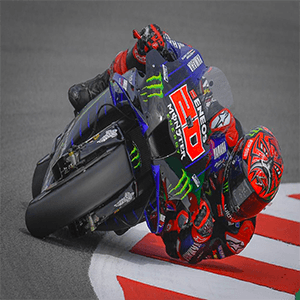
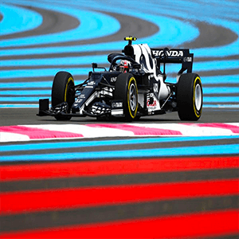

Présentation de la Ninja 650
Voici ma moto, fan de moto depuis mon plus jeune âge, j'ai eu la chance de pouvoir m'offrir ce genre de bolide !
C'est une Kawazaki Ninja 650 de 2020, c'est un moteur 2 temps, bridé en permis A2 jusqu'en aout 2022.
Le sport
Fan de moto, je suis également la moto GP, elle permet de montrer quel pilote et quelle écurie est la meilleur au monde via ces circuits qui nous permettent nous spectateur de voyager avec eux. Pourquoi Fabio ? Car c'est un jeune pilote français et qui possède devant lui une carrière très prometteuse.
Si vous connnaisez ce genre de véhicule, pas besoins d'aller plus loin, c'est évidemment une Formule 1 de cette année, ce véhicule est conduit par GASLY Pierre, le dernier pilote français à avoir remporter un grand-prix de Formule 1. Egalement si cette photo et ce paragraphe ce trouve ici c'est que j'aime ce sport automobile, je le suis et j'attends chaque grand-prix avec impatience.